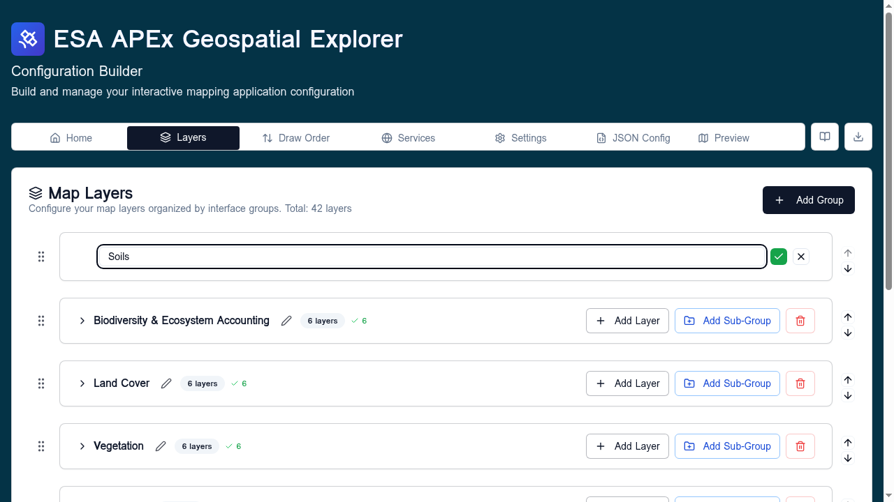

Interface groups¶
Interface groups are the user-facing groupings shown at the top level of the deployed APEx Geospatial Explorer's layer panel — for example Land Cover, Soils, Climate. Every layer card in the config must belong to one.
Follow along
Screenshots on this page were taken with the Comprehensive demo config loaded.
Where they live¶
The Interface Groups card appears on the Settings tab.
The card lists every group as a row, in the order the deployed Explorer will render them.

Adding a group¶
- Type a name in the Enter group name field at the top of the card.
- Press Enter or click the + button.
The new group is appended to the bottom of the list. Names are free-form but should be short — they appear as section headers in the layer panel.
Reordering¶
Each row has up/down arrow buttons. The order in this list is the order groups appear in the deployed Explorer.
- Single click ↑ / ↓ — move one position.
- Double click ↑ / ↓ — jump to the top / bottom.
- The drag handle (⋮⋮) on the left supports drag-and-drop reordering for longer lists.
Renaming¶
Click the pencil icon on a row to enter rename mode. Edit the value and click the green check to confirm or the outline button to cancel. Press Enter to confirm from the keyboard.
When you rename a group, every layer card that referenced the old name is updated to the new name automatically.

Deleting¶
Click the red trash-can icon. You will be blocked from deleting a group that still contains layers — move or delete the layers first.
Group occupancy¶
Each row shows a count: (N sources). This is the number of data sources
currently assigned to layers in that group, useful as a sanity check
before deleting or reordering.
Sub-interface groups¶
Sub-groups are not declared here. They are typed directly into the Sub-interface group field on each layer card. Any sub-group name used on at least one card automatically appears as a folder under its parent interface group in the deployed Explorer.
For the conceptual model see Layers overview → How the tab is laid out.
Tips¶
- Keep the number of top-level groups small (3–6 is ideal). Use sub-groups on individual layer cards for finer-grained organisation.
- Group names are case-sensitive.
- The order in this list also drives the order in the Draw Order tab's grouping.